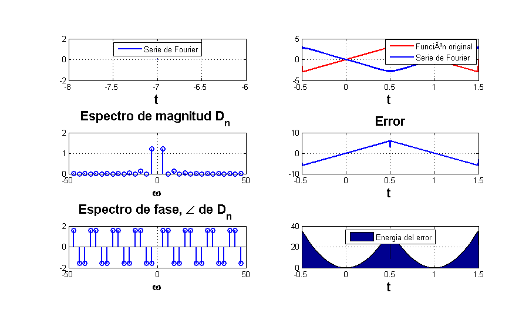
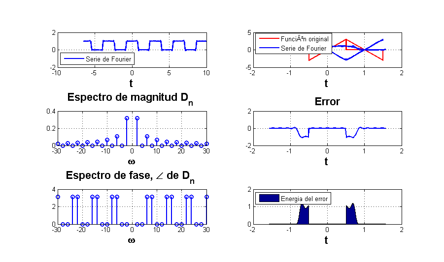
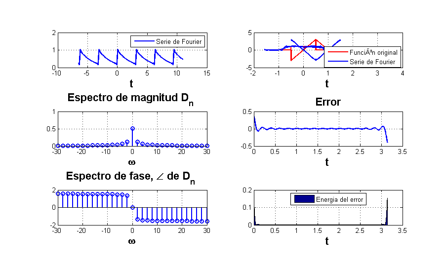
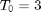
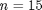
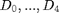

Practica 05. Series de Fourier en tiempo continuo
Contents
Integrantes
- Vargas Martinez Javier
- Villavicencio Castillo Rodrigo Adrian
Objetivos
- Realizar gráficas de series de Fourier exponenciales y trigonométricas en tiempo continuo
- Manipulación de instrucciones en MATLAB
- Calculo númerico de los coeficientes de Fourier
Introducción
Aproximación númerica de los coeficientes de Fourier exponencial compleja
Instrucciones
- Realizar el programa de la serie que se indica
- Gráfica de la serie de Fourier en un intervalo que muestre 5 repeticiones
- Gráfica de la señal y la serie de Fourier para 4 armonicos
- Gráfica del error
- Gráfica de la energÃa del error
- Espectro de magnitud para 4 armonicos
- Espectro de fase para 4 armonicos
- Todo lo anterior para 15 armonicos
Ejemplo 6.1
Con serie y espectro trigonometrico, no es necesario entregar el código, solo la aplicación al problema especifico, debe de indicar la función y los valores de sus coeficientes (sin incluir el procedimiento)
Ejemplo 6.2
Con serie y espectro exponencial y A=3, no es necesario entregar el código, solo la aplicación al problema especifico, debe de indicar la función y los valores de sus coeficientes (sin incluir el procedimiento)
dn=@(n) (12)/(n^2*pi^2)*j*sin((n*pi)/2); d0=0; t0=-1/2; tf=3/2; f=@(t) 6.*t.*(t>-1/2 & t<1/2) + 6.*(1-t).*(t>1/2 & t<3/2); armo=4; a=-7; b=-7; figure sfc(t0,tf,dn,d0,f,armo,a,b) figure sfc(t0,tf,dn,d0,f,15,a,b)
Ejemplo 6.4
Con serie y espectro exponencial, no es necesario entregar el código, solo la aplicación al problema especifico, debe de indicar la función y los valores de sus coeficientes (sin incluir el procedimiento)
syms t f=@(t) rectangularPulse(t); [rectangularPulse(sym(-1)) rectangularPulse(sym(-1/2)) rectangularPulse(sym(0)) rectangularPulse(sym(1/2)) rectangularPulse(sym(1))]; %%fplot(f(t)); d0=0.5; dn=@(n) (sin(pi*n/2))/(pi*n); t0=-pi/2; tf=pi/2; armo=4; a=-6.5; b=10; figure sfc(t0,tf,dn,d0,f,armo,a,b) % para 15 armonicos sfc(t0,tf,dn,d0,f,15,a,b)
Ejemplo 6.5
Con serie y espectro exponencial, no es necesario entregar el código, solo la aplicación al problema especifico, debe de indicar la función y los valores de sus coeficientes (sin incluir el procedimiento) Realizamos lo siguiente:
d0=0.504; dn=@(n) 0.504/(1+4*n*j); t0=0; tf=pi; f=@(t) exp(-t/2); armo=4; a=-6.5; b=11; figure sfc(t0,tf,dn,d0,f,armo,a,b) % % Para 15 armonicos figure sfc(t0,tf,dn,d0,f,15,a,b)
Ejemplo 6.7
Con serie y espectro exponencial y  sin incluir la gráfica de f, error ni energÃa del error, no es necesario entregar el código, solo la aplicación al problema especifico, debe de indicar la función y los valores de sus coeficientes (sin incluir el procedimiento)
Ejercicio 06
Elabore un código similar al COMPUTER EXAMPLE C6.2 que se encuentra al final de la sección 6.2 de Lathi para el Ejempo 6.2 con los datos indicados anteriormente (no utilice inline)
include>ComputerEX62.m</include
Ejercicio 07
Elabore un código que implemente el algoritmo de trapecio compuesto para , Utilice este código para aproximar  del ejemplo de la práctica. Ahora implemente el código COMPUTER EXAMPLE C6.4 que se encuentra al final de la sección 6.6 de Lathi, y calcule nuevamente el los coeficientes del ejemplo propuesto. Muestre una tabla que contenga los coeficientes mencionados calculados con los dos algoritmos y de forma exacta, ¿Qué algortmo aproxima mejor a los coeficientes?, para esto compare los coefientes con el valor absoluto de la resta.
include>ComputerEX64.m</include
%
Conclusiones
Conclusión: En esta practica vimos la función de la serie de fourier, las diferentes maneras de calcularlo y las particularidades en cuanto al número de armonicos solicitados, entre mayor sea el número, la serie tiende a ser más similar que la función original